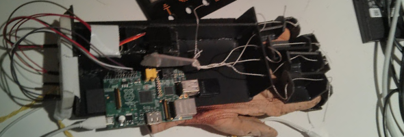
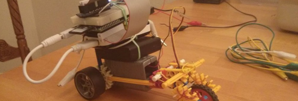
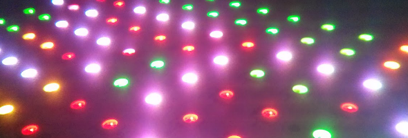
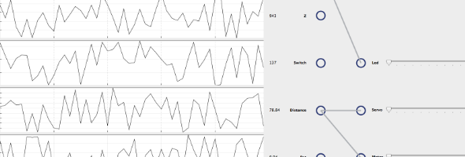
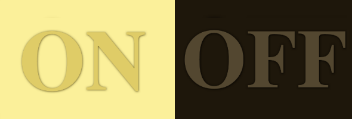
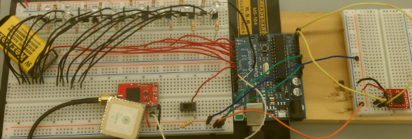
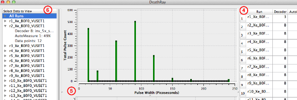

Tactilous: A Force-Feeback Haptic Glove

This glove was my winning entry in the YCombinator Hardware Hackathon. I led a team of six engineers in designing and prototyping a novel form of human-computer interaction.
More Info | TechCrunch Interview
Android Controlled Raspberry Pi Car

I built a small car that is steered wirelessly through an Android phone. This project served as an introduction to Raspberry Pi hardware control and Android programming.
More Info | Youtube Video | Raspi Code | Android Code
Github Event Display on LED Matrix

This project consists of an Arduino, Electric Imp, and an 8x16 RGB LED Matrix. The matrix displays live updates from my organization's Github events feed in real time.
More Info | Youtube Video | Source Code
RobotBrain: An Open Source Python Framework for Sensor and Actuator Control

RobotBrain is an open source library I've developed to simplify hardware interactions with the Raspberry Pi. I've written easy to use interfaces on top of many useful sensors and actuators.
Internet Controlled Lamp

I connected a lamp to the Internet with a Raspberry Pi, RF controlled outlets, and some software. The lamp can be easily controlled by anyone with the URL.
Haptic Band: An Ever Present Sense of Direction Though Vibration

For my final project in my embedded systems course at Vanderbilt I designed and implemented a prototype device that when worn gives the wearer an ever-present sense of direction. The belt wraps around your ankle and uses one of eight embedded vibration motors to indicate direction.
DeathRay: Open Source Application for Control and Visualization of Lab Equipment

For my senior engineering project at Vanderbilt I led a team of 3 students in designing, architecting, and implementing a GUI application to control lab equipment. The application is written in Python and uses the GPIB protocol to speak to connected devices.